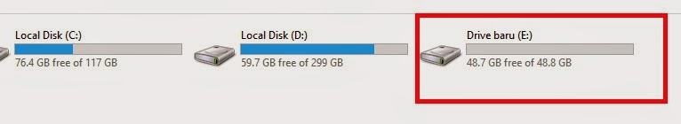
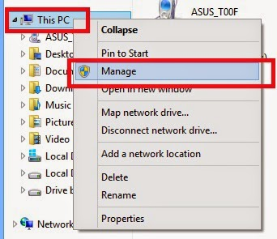
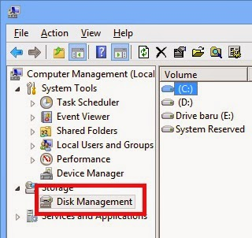
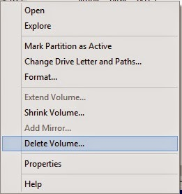

Cara Menampilkan Folder dan File Tersembunyi
By Awaludin Siking
Kali ini kita akan membahas mengenai cara mengembalikan partisi yang sudah kita bagi pada artikel sebelumnya. Berikut langkah – langkahnya :
1. Pastikan hardisk yang akan kita kembalikan partisinya tersebut sudah dalam keadaan kosong atau semua data yang ada di partisi tersebut sudah di Backup. Karena Kita akan menghapus partisi tersebut dan menambahkannya kembali pada drive sebelumnya.

2. Klik kanan pada My Computer / This PC kemudian klik Manage.

3. Masuk ke bagian Disk Management

4. Klik kanan pada partisi yang akan dihapus, klik Delete Volume… (Hati – hati, jangan salah mengkilk partisi hardisk, jika salah maka semua data anda bisa hilang)


 Perbedaan Jaringan 3G dan 4G
Perbedaan Jaringan 3G dan 4G
 Jumlah Core dan Hubungannya dengan
Jumlah Core dan Hubungannya dengan Pengertian Subnetting IP Address
Pengertian Subnetting IP Address  Cara Mengatur Layar di Windows Saat
Cara Mengatur Layar di Windows Saat Pengertian dan Cara Defrag/Defragment
Pengertian dan Cara Defrag/Defragment  Macam macam file audio dan
Macam macam file audio dan  Apa itu Extreme Programming ?
Apa itu Extreme Programming ?